About the Experiment
This experiment enables a student to learn
- How to realize functionality of a 3-to-8 line active low Decoder viz. 74138 IC. That is on setting the two active low and one active high enable inputs to proper level, one can verify that one and only one of the eight active low outputs is asserted based on the values assigned to three select input.
- How to cascade two 74138 IC's to implement a 4-to-6 active low decoder.

Part1
IC 74138 works as a 3-to-8 active low decoder,based on the values assigned to three select inputs of the three enable inputs, G1 must be made high value while G2A and G2B must be low. The eight active low inputs (Y0 to Y7) correspond to eight maxterms (M0 to M7) or in other words, component of the corresponding minterms m0-m7. For example, Y0 = component of C B A = C+B+A.
Figure 1 (IC 74138)
| G2A | G2B | G1 | C | B | A | Y0 | Y1 | Y2 | Y3 | Y4 | Y5 | Y6 | Y7 |
| L | L | H | 0 | 0 | 0 | 0 | 1 | 1 | 1 | 1 | 1 | 1 | 1 |
| L | L | H | 0 | 0 | 1 | 1 | 0 | 1 | 1 | 1 | 1 | 1 | 1 |
| L | L | H | 0 | 1 | 0 | 1 | 1 | 0 | 1 | 1 | 1 | 1 | 1 |
| L | L | H | 0 | 1 | 1 | 1 | 1 | 1 | 0 | 1 | 1 | 1 | 1 |
| L | L | H | 1 | 0 | 0 | 1 | 1 | 1 | 1 | 0 | 1 | 1 | 1 |
| L | L | H | 1 | 0 | 1 | 1 | 1 | 1 | 1 | 1 | 0 | 1 | 1 |
| L | L | H | 1 | 1 | 0 | 1 | 1 | 1 | 1 | 1 | 1 | 0 | 1 |
| L | L | H | 1 | 1 | 1 | 1 | 1 | 1 | 1 | 1 | 1 | 1 | 0 |
Figure 2 : Truth table for 3 to 8 decoder
Part2
Cascading two 74138 IC(Two 3 to 8 active low decoder) we can achieve a 4 to 16 active low decoder.
G2A and G2B inputs of the first IC(74138) and G1 input of 2nd IC(74138) are shorted and it acts as MSB of 4 binary select input . G2A &G2B of second IC(74138) is kept low.G1 of 1st IC is kept always high.
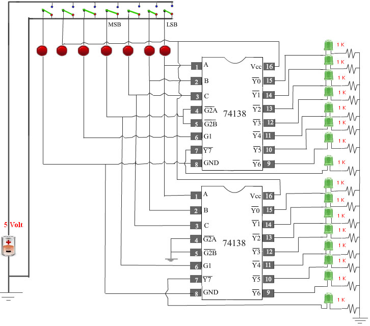
Figure 3 : 4 to 16 decoder cascadeding two 3 to 8 decoder
| Select Inputs | 1st Decoder | 2nd Decoder | |||||||||||||||||
| D | C | B | A | Y0 | Y1 | Y2 | Y3 | Y4 | Y5 | Y6 | Y7 | Y0 | Y1 | Y2 | Y3 | Y4 | Y5 | Y6 | Y7 |
| 0 | 0 | 0 | 0 | 0 | 1 | 1 | 1 | 1 | 1 | 1 | 1 | 1 | 1 | 1 | 1 | 1 | 1 | 1 | 1 |
| 0 | 0 | 0 | 1 | 1 | 0 | 1 | 1 | 1 | 1 | 1 | 1 | 1 | 1 | 1 | 1 | 1 | 1 | 1 | 1 |
| 0 | 0 | 1 | 0 | 1 | 1 | 0 | 1 | 1 | 1 | 1 | 1 | 1 | 1 | 1 | 1 | 1 | 1 | 1 | 1 |
| 0 | 0 | 1 | 1 | 1 | 1 | 1 | 0 | 1 | 1 | 1 | 1 | 1 | 1 | 1 | 1 | 1 | 1 | 1 | 1 |
| 0 | 1 | 0 | 0 | 1 | 1 | 1 | 1 | 0 | 1 | 1 | 1 | 1 | 1 | 1 | 1 | 1 | 1 | 1 | 1 |
| 0 | 1 | 0 | 1 | 1 | 1 | 1 | 1 | 1 | 0 | 1 | 1 | 1 | 1 | 1 | 1 | 1 | 1 | 1 | 1 |
| 0 | 1 | 1 | 0 | 1 | 1 | 1 | 1 | 1 | 1 | 0 | 1 | 1 | 1 | 1 | 1 | 1 | 1 | 1 | 1 |
| 0 | 1 | 1 | 1 | 1 | 1 | 1 | 1 | 1 | 1 | 1 | 0 | 1 | 1 | 1 | 1 | 1 | 1 | 1 | 1 |
| 1 | 0 | 0 | 0 | 1 | 1 | 1 | 1 | 1 | 1 | 1 | 1 | 0 | 1 | 1 | 1 | 1 | 1 | 1 | 1 |
| 1 | 0 | 0 | 1 | 1 | 1 | 1 | 1 | 1 | 1 | 1 | 1 | 1 | 0 | 1 | 1 | 1 | 1 | 1 | 1 |
| 1 | 0 | 1 | 0 | 1 | 1 | 1 | 1 | 1 | 1 | 1 | 1 | 1 | 1 | 0 | 1 | 1 | 1 | 1 | 1 |
| 1 | 0 | 1 | 1 | 1 | 1 | 1 | 1 | 1 | 1 | 1 | 1 | 1 | 1 | 1 | 0 | 1 | 1 | 1 | 1 |
| 1 | 1 | 0 | 0 | 1 | 1 | 1 | 1 | 1 | 1 | 1 | 1 | 1 | 1 | 1 | 1 | 0 | 1 | 1 | 1 |
| 1 | 1 | 0 | 1 | 1 | 1 | 1 | 1 | 1 | 1 | 1 | 1 | 1 | 1 | 1 | 1 | 1 | 0 | 1 | 1 |
| 1 | 1 | 1 | 0 | 1 | 1 | 1 | 1 | 1 | 1 | 1 | 1 | 1 | 1 | 1 | 1 | 1 | 1 | 0 | 1 |
| 1 | 1 | 1 | 1 | 1 | 1 | 1 | 1 | 1 | 1 | 1 | 1 | 1 | 1 | 1 | 1 | 1 | 1 | 1 | 0 |
Figure 4 : Truth table for 4 to 16 decoder
Part 3
A decoder with active high outputs generates minterms. Whereas, a decoder with active low outputs generates maxterms (i.e. complements of the corresponding minterm). Thus, if a function is specified as a sum of minterms or equivalently as a product of maxterms, it can be realized by a decoder with active low outputs and additional AND/NAND gates.For example, consider the following
F1 (A,B,C) = Σ m (1,2)
F2 (A,B,C) = Σ m (0,1,2,3,4,5)


Aim of the Experiment
The objective of Part 1 of the experiment is to fully understand the functionality of active low 3 line to 8 line Decoder using 74138 IC and to show how according to select inputs and three enable inputs the active low outputs(Y0 toY7) will be enabled or disabled.
The objective of Part 2 of the experiment is to understand the functionality of an active 4-to-16 active low decoder implemented by cascading two 74138 ICs.

Please follow these steps to do the experiment.
Part 1:
- 1. At first go through the structure of 74138. Then apply high level voltage to VCC and apply low level voltage to GND and also apply high level voltage to G1.
- 2. Next, apply low level voltage to all the three select inputs (C B A). Now check that Y0 is at low state. Other outputs are at high state.
- 3. Next, apply low level voltage to C and B and apply high level voltage to A. Now check that Y1 is at low state. Other outputs are at high state.
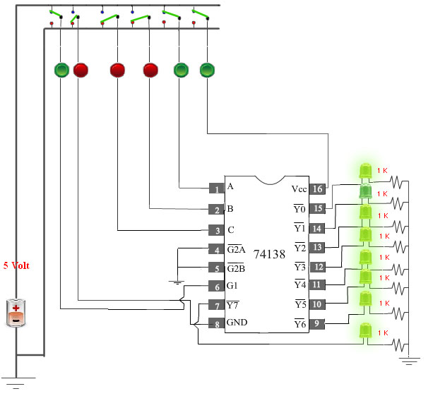
- 4. Next, apply low level voltage to C and A and apply high level voltage to B. Now check that Y2 is at low state. Other outputs are at high state.
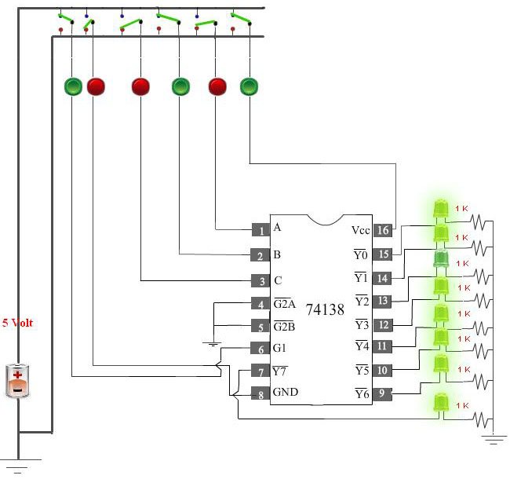
- 5. Next, apply low level voltage to C and apply high level voltage to B and A. Now check that Y3 is at low state. Other outputs are at high state.
- 6. Next, apply high level voltage to C and apply low level voltage to B and A. Now check that Y4 is at low state. Other outputs are at high state.

- 7. Next, apply high level voltage to C and A and apply low level voltage to B. Now check that Y5 is at low state. Other outputs are at high state.
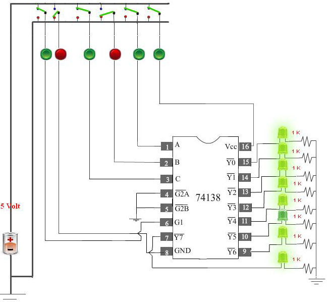
- 8. Next, apply high level voltage to C and B high and apply low level voltage to A. Now check that Y6 is at low state. Other outputs are at high state.

- 9. Next, apply high level voltage to all the select inputs (C,B,A). Now check that Y7 is at low state. Other outputs are at high state.
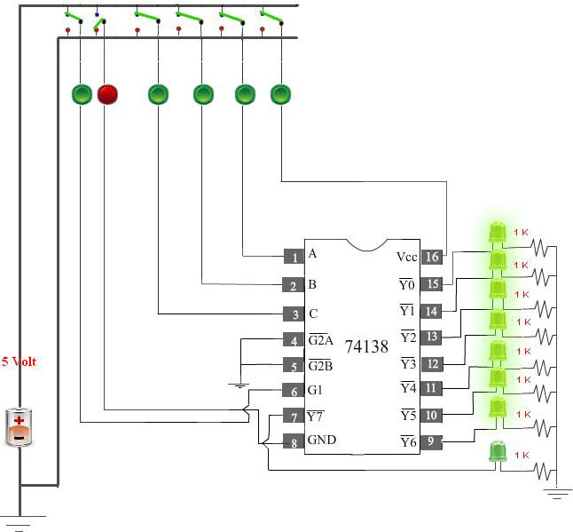
Please follow these steps to do the experiment(Part2).
- 1. At first apply high level voltage to VCC and apply low level voltage to GND andapply high level voltage to G1 input of 1st decoder.

- 2. Next, apply low level voltage to all the four select inputs (MSB,C B A). Now check that Y0 (1st Decoder) is at low state. Other outputs are at high state.
- 3. Next, apply high level voltage to A and apply low level voltage to all other select inputs (MSB,C B). Now check that Y1 (1st Decoder) is at low state. Other outputs are at high state.
- 4. Next, apply high level voltage to B and apply low level voltage to all other select inputs (MSB,C, A ). Now check that Y2 (1st Decoder) is at low state. Other outputs are at high state.

- 5. Next, apply high level voltage to A and B and apply low level voltage to all other select inputs (MSB,C )low. Now check that Y3 (1st Decoder) is at low state. Other outputs are at high state.
- 6. Next, apply high level voltage to C and apply low level voltage to all other select inputs (MSB,B,A ). Now check that Y4 (1st Decoder) is at low state. Other outputs are at high state.
- 7. Next, apply high level voltage to C and A and apply low level voltage to all other select inputs (MSB,B ). Now check that Y5 (1st Decoder) is at low state. Other outputs are at high state.
- 8. Next, apply high level voltage to C and B and apply low level voltage to all other select inputs (MSB,A ). Now check that Y6 (1st Decoder) is at low state. Other outputs are at high state.
- 9. Next, apply high level voltage to C , B and A high and apply low level voltage to (MSB)input. Now check that Y7 (1st Decoder) is at low state. Other outputs are at high state.
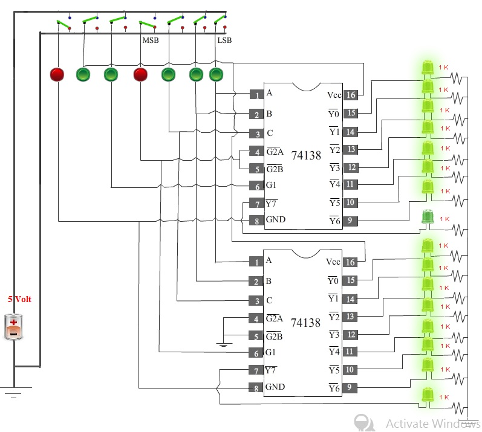
- 10. Next, apply high level voltage to MSB and apply low level voltage to all other select inputs (C,B,A). Now check that Y0 (2nd Decoder) is at low state. Other outputs are at high state.

- 11. Next, apply high level voltage to MSB and A and apply low level voltage to all other select inputs (C,B). Now check that Y1(2nd Decoder) is at low state. Other outputs are at high state.

- 12. Next, apply high level voltage to MSB and B and apply low level voltage to all other select inputs(C,A). Now check that Y2 (2nd Decoder) is at low state. Other outputs are at high state.
- 13. Next, apply high level voltage to MSB , B and A and apply low level voltage to the input (C). Now check that Y3 (2nd Decoder) is at low state. Other outputs are at high state.
- 14. Next, apply high level voltage to MSB and C and apply low level voltage to all other select inputs (B,A). Now check that Y4 (2nd Decoder) is at low state. Other outputs are at high state.

- 15. Next, apply high level voltage to MSB , C and A and apply low level voltage to the select input (B). Now check that Y5 (2nd Decoder) is at low state. Other outputs are at high state.

- 16. Next, apply high level voltage to MSB , C and B and apply low level voltage to the input (A). Now check that Y6 (2nd Decoder) is at low state. Other outputs are at high state.

- 17. Next, apply high level voltage to all the select inputs (MSB,C,B,A). Now check that Y7 (2nd Decoder) is at low state. Other outputs are at high state.
Part 3:
- 1. At first click on the Browse Block button
- 2. Next, drag the Decoder block and drop it onto the bread board.
- 2. Next, drag the mux block and drop it onto the bread board.


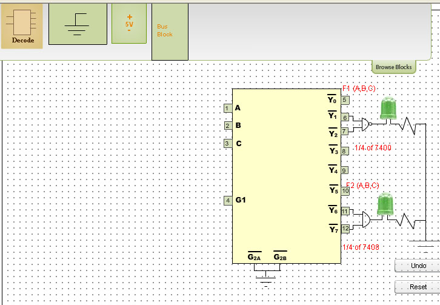
- 3. Next, drag the Bus block and drop it onto the bread board.


- 4. Next, drag the Voltage block and drop it onto the bread board.
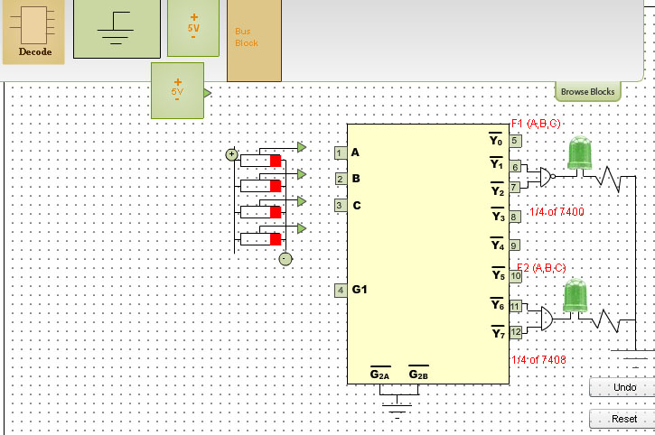

- 5. Next, drag the Ground block and drop it onto the bread board.
- 5. Next, make a connection from voltage block to positive end of the bus block.
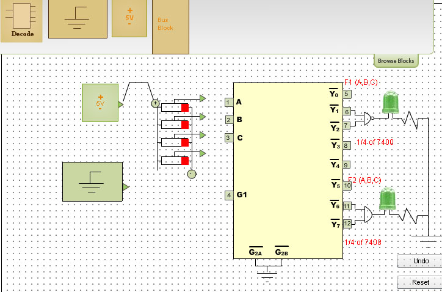
- 6. Next, make a connection from ground block to negitive end of the bus block.


The 4 switches constituting the Bus Block are denoted as A,B,C and D as one goes bottomwards starting with the top switch A .
- 7. Next, make a connection from switch A to A of the Decoder block.

- 8. Next, make a connection from switch B to B of the Decoder block.

- 9. Next, make a connection from switch C to C of the Decoder block.
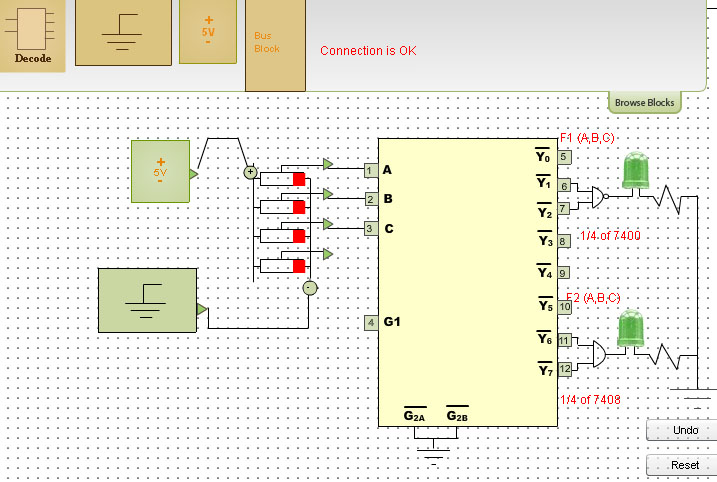
- 10. Next, make a connection from switch D to G1 of the MUX block.
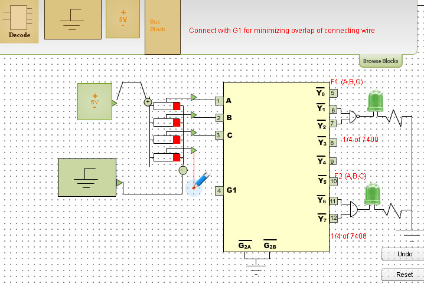

- 11. Next, apply high level voltage to G1.
- 12. Next, apply low level voltage to (A, B, C) input.
- 13. Now check that output F2 attains logic high state.
- 14. Next, apply low level voltage to A(MSB) and B and apply high level voltage to C(LSB).
- 15. Now check that output F1 and F2 both attain logic high state.

- 16. Next, apply high level voltage to B and apply low level voltage to A(MSB) C(LSB).
- 17. Now check that output F1 and F2 both attain logic high state.
- 18. Next, apply high level voltage to C and B and apply low level voltage to A(MSB).
- 19. Now check that that output F2 attains logic high state.
- 20. For all the combinations of the select inputs A,B,C verify that both the LEDs are glowing or not glowing. If the LED glows, it indicates that the corresponding output has reached logic 1 level. Similarly a dark LED indicates low level output voltage.


|
|
Part 1: Analysis and Synthesis of Logic Functions using 3:8 Decoder
Click here for the javascript simulator

Not now